Drumlab MANUAL
ViewsSoundsStepsAccentsMuteChainTempoLocksEffectsSOUNDA and BKitsSendProjectsMenuLessonsMIDIBackupNumbersRescue
1The three views
HOME flips between PATTERN, SOUND and SEND.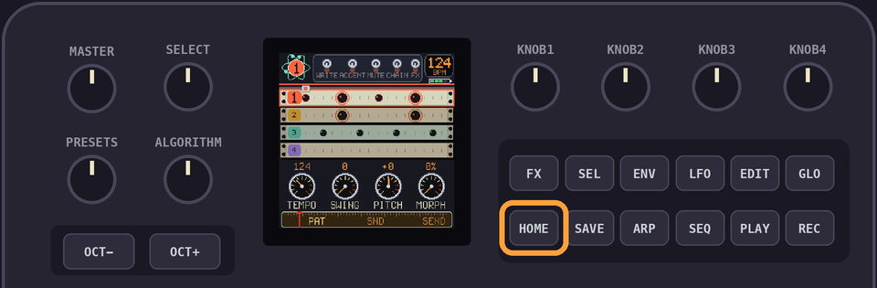
PATTERN is where you write the beat, SOUND is where you shape the sounds and SEND puts it all on a PO-32.
Hold
HOME to open the projects.GLO shows the help for the view you're on.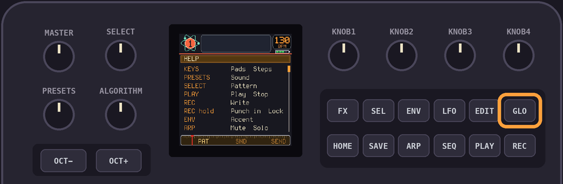
GLO + HOME opens the menu.PLAY plays and stops. SAVE saves.2Sounds and lanes
There are 16 sounds, on the 16 white keys as a 4 x 4 grid.
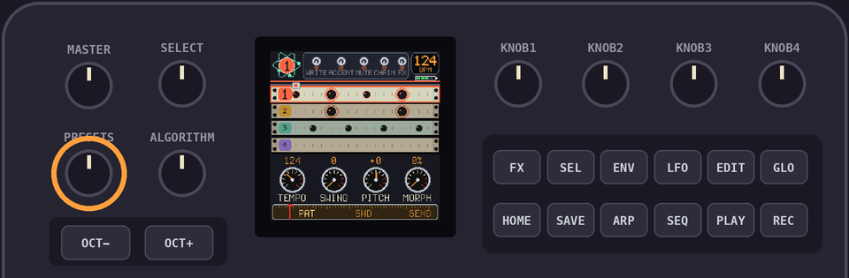
| Lane 1 | Lane 2 | Lane 3 | Lane 4 |
|---|---|---|---|
1 | 2 | 3 | 4 |
5 | 6 | 7 | 8 |
9 | 10 | 11 | 12 |
13 | 14 | 15 | 16 |
The columns are the 4 lanes. A lane plays one sound at a time, so a new hit cuts the old one.
PRESETS picks a sound. The keys play them.Sounds 1 to 4 are a kick, a snare, a hat and a bell, tom or cowbell, in every kit.
3Writing steps
Tap
REC to turn WRITE on. The 16 keys are the 16 steps.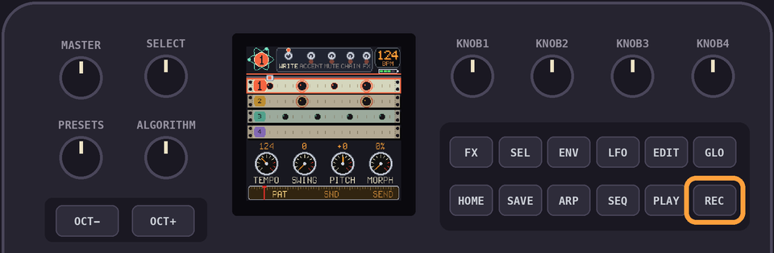
Pick a sound with
PRESETS, then press the steps it plays on. Press a step again to take it away.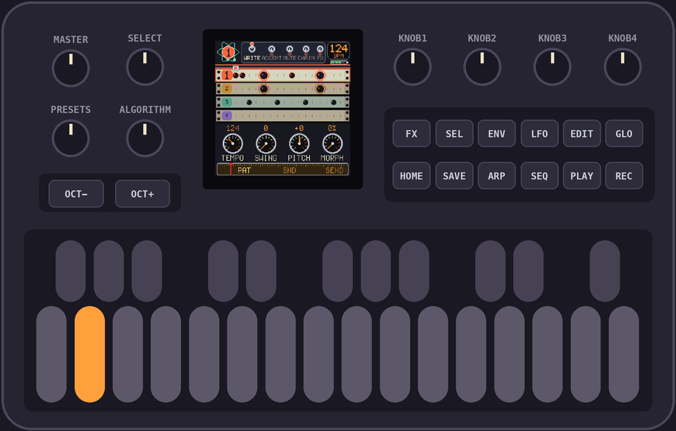
A step holds one sound per lane. Writing another sound of the same lane replaces it.
Hold
REC while it plays and press the pads. The hits land on the step nearest the playhead.SELECT picks the pattern, 1 to 16.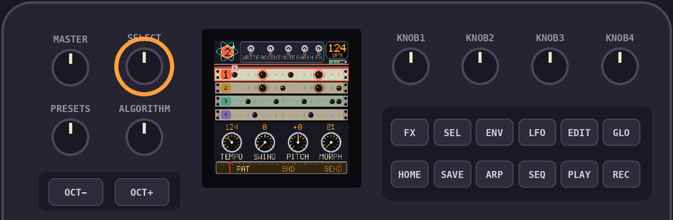
OCT+ copies the pattern to the next one and goes there.Hold
EDIT to clear the pattern.LFO takes back the last change to the pattern. One step back, and no redo.It saves by itself three seconds after you stop editing, as long as nothing is playing.
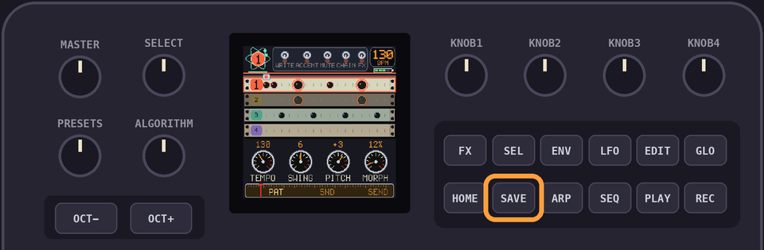
4Accents
ENV turns ACCENT on. Press a step to accent it, press it again to take it away.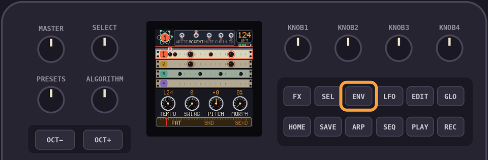
An accent is on the step, so every lane's hit on it is louder.
5Mute and solo
ARP once is MUTE, twice is SOLO, three times is off.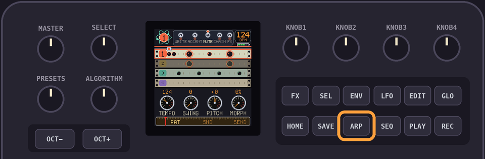
In either, a key picks its lane: keys 1, 5, 9 and 13 are lane 1, and so on.
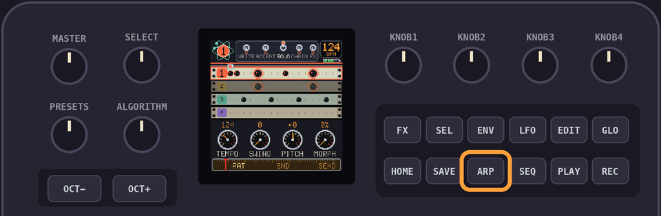
6Chain
SEL turns chain mode on. The keys add patterns 1 to 16 to the chain.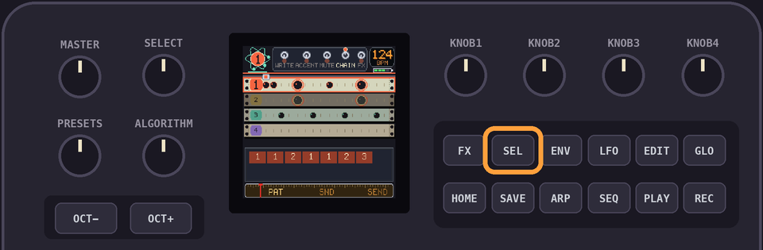
Tap
EDIT to take the last one off. Hold EDIT to clear the chain.With no chain, the pattern on show loops.
A chain holds up to 64 patterns.
7Tempo and swing
KNOB 1 is the tempo, 60 to 240.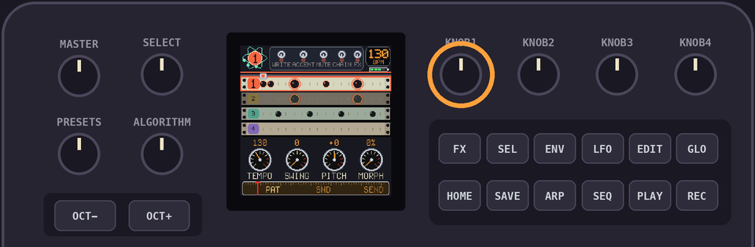
KNOB 2 is the swing, 0 to 12.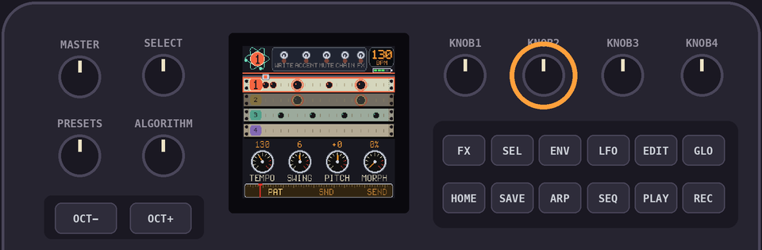
8Pitch and morph
KNOB 3 tunes the sound you picked and KNOB 4 slides it from patch A to patch B.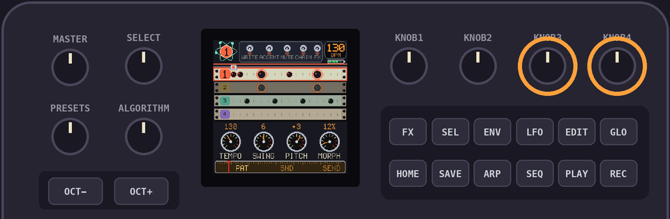
A step keeps the pitch and morph it was written with.
To change one step, hold its key in WRITE and turn
KNOB 3 or KNOB 4. That's a step lock.To change many, hold
REC while it plays and turn the knobs. They write into the steps of the sound you picked as they pass.9Effects
Hold
FX and press keys. Each key is an effect, on for as long as you hold it.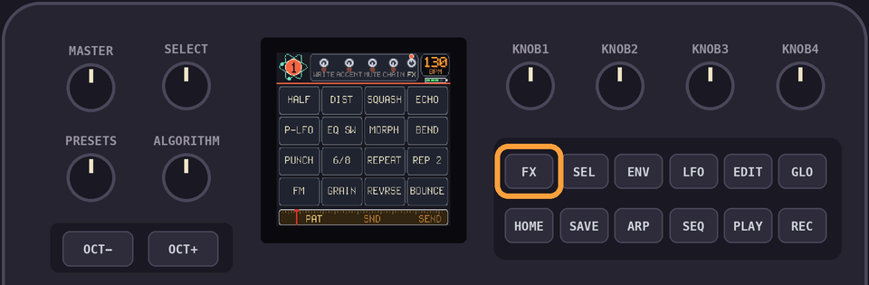
HALF | DIST | SQUASH | ECHO |
P-LFO | EQ SW | MORPH | BEND |
PUNCH | 6/8 | REPEAT | REP 2 |
FM | GRAIN | REVRSE | BOUNCE |
Tap
FX to latch the layer, tap it again to put it away.With WRITE on and the pattern playing, the effects you press are written into the steps as they pass.
With WRITE on, hold
FX and press nothing while it plays to wipe the effects from the steps as they pass.10The SOUND view
PRESETS picks the sound.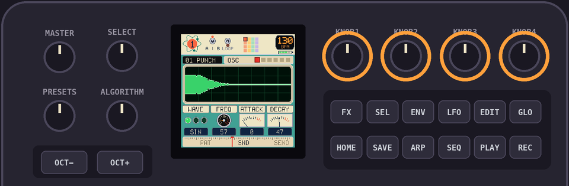
ALGORITHM flips through six pages. The four knobs set what the page shows.| Page | KNOB 1 | KNOB 2 | KNOB 3 | KNOB 4 |
|---|---|---|---|---|
| OSC | WAVE: SIN, TRI, SAW | FREQ | ATTACK | DECAY |
| MOD | MODE: DECAY, SINE, NOISE | RATE | AMOUNT | VELOC |
| NOISE | FILTER: LP, BP, HP | FREQ | Q | VELOC |
| ENV | SHAPE: EXP, LIN, MOD | ATTACK | DECAY | MIX |
| OUT | DIST | EQ HZ | EQ DB | LEVEL |
| SOUND | VELOC | PITCH | MORPH |
The sound plays a moment after you stop turning. The keys play the sound as you have it now.
Hold
EDIT while you turn for fine control: a click moves a tenth as far.PLAY loops the sound while you tweak.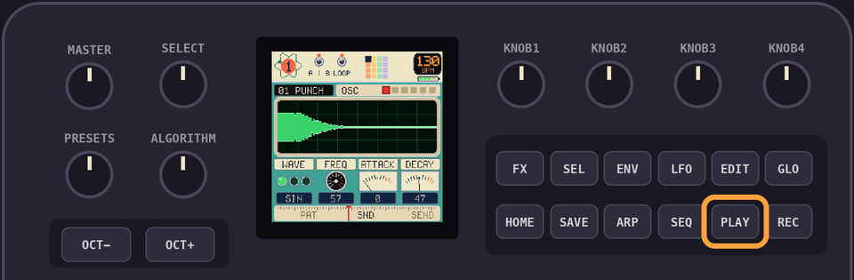
11Patches A and B
Every sound is two patches.
SEL picks the one you edit.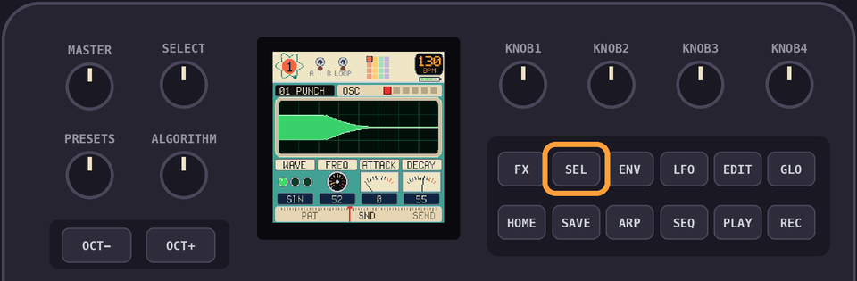
MORPH, on the SOUND page and on
KNOB 4, blends the two when the sound plays.MORPH in the FX layer plays every hit as patch B.12Kits
In the SOUND view,
OCT+ opens the kits window. Every kit replaces all 16 sounds. Your patterns stay.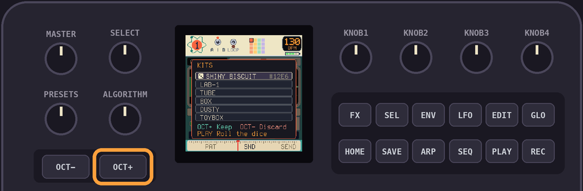
SELECT or PRESETS walks the list: a rolled kit, LAB-1 and the preset kits. Each plays as you land on it, and the keys play its sounds.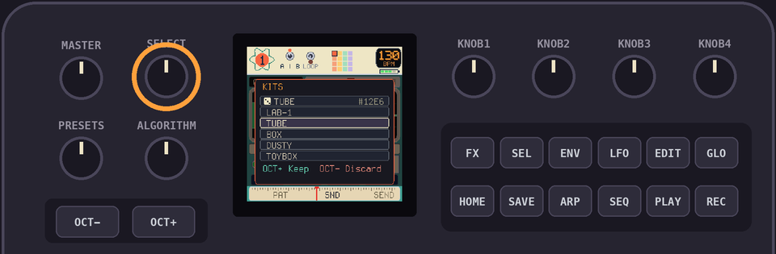
Preset kits: TUBE, BOX, DUSTY, TOYBOX, ELECTRO, SPACE, POCKET, ACID, CHIP.
On the rolled kit,
PLAY rolls another.OCT+ keeps the kit. OCT- puts the old one back.13Sending to a PO-32
In the SEND view,
PLAY asks first.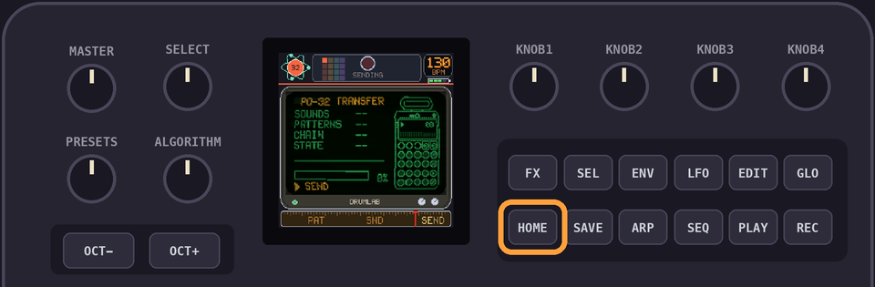
OCT+ sends all 16 sounds, A and B, the 16 patterns, the tempo, the swing and the chain.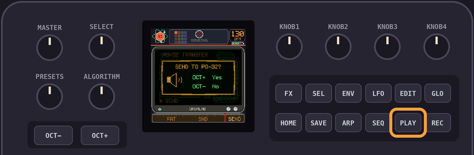
PLAY stops it. OCT- puts the window away.The tutorial has the cables.
14Projects
Hold
HOME to open the projects. There are 12.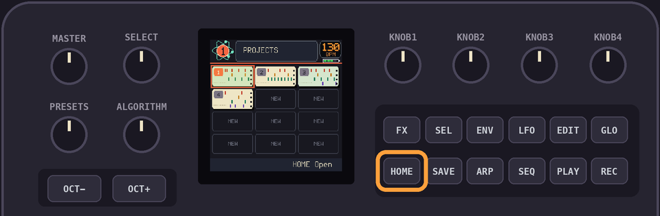
SELECT or PRESETS walks them. Each plays a few of its sounds as you land on it.HOME opens one. Hold HOME to close the list and stay where you were.Hold
EDIT to delete one. OCT+ says yes.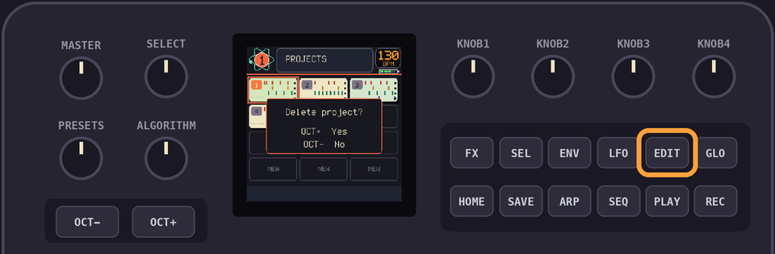
A new project starts from the LAB-1 kit.
16Lessons
A lesson shows a pattern as rings to play in. Press the steps the rings are on.
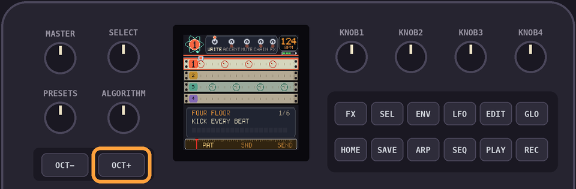
FOUR FLOOR, BACKBEAT, BOOM BAP, OFFBEAT HATS, ELECTRO, HAT ROLL.
HOME leaves. Your project comes back as it was.When every ring is filled,
OCT+ starts the next lesson.17MIDI
| Message | What it does |
|---|---|
| Notes 0 to 15, and 36 to 51 | Play the 16 sounds. On 36 to 51, a velocity over 110 is an accent. |
| Notes out | The pads send notes 36 to 51 on channel 10 whenever they sound. |
| Program change 0 to 15 | Picks the pattern. |
| CC 102 | 64 and up plays, below stops. |
| CC 103 | The tempo, divided by 2. |
| CC 104 | A value of 1 sends to the PO-32. |
| Clock, start, stop | Out when MIDI CLOCK is SEND, in when it is FOLLOW. |
While it follows a clock, the tempo turns cyan.
18Backup and restore
The Projects page downloads any project, or all of them in one file. It puts them back the same way.
A project is a
.drumlab file. A backup of everything is one .json.19The numbers
| Sounds | 16, each with patches A and B |
| Lanes | 4 |
| Patterns | 16 |
| Steps in a pattern | 16 |
| Chain | 64 patterns |
| Effects | 16 |
| Tempo | 60 to 240 bpm |
| Swing | 0 to 12 |
| Projects | 12 |
| Undo | 1 change |
20Updates and rescue
Install and update with the install page.
If your FM-1 is stuck, hold
OCT- while you plug it in. The install page takes it from there.